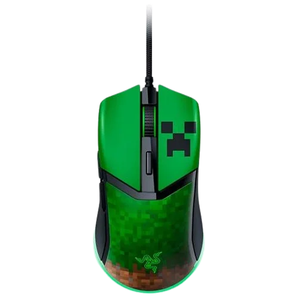
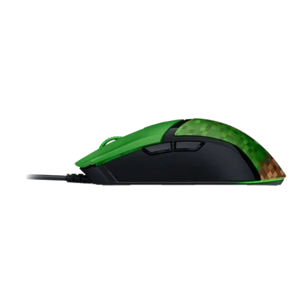

Mouse Gamer Razer Cobra Minecraft Edition, Cableado, 8500 DPI, 58g, Razer Chroma RGB
$79.990Ratón para juegos con cable Razer Cobra: 58 g, liviano, interruptores ópticos de tercera generación, iluminación croma RGB bajo brillo, sensor óptico preciso de 8500 DPI, patas de ratón 100% PTFE, cable Speedflex, edición Minecraft, CREEPIN IT REAL Vive realmente la vida de los bloques con el ratón para juegos con licencia oficial de Razers para Minecraft - DISEÑO LIGERO DE 58 G Diseñado para adaptarse a la mayoría de los estilos de agarre, el ratón permite un control rápido y preciso y es cómodo de usar durante largas sesiones de juego - GEN-3 OPTICAL CONMUTADORES DE RATÓN Durabilidad y velocidad incomparables con conmutadores que suman más de 90 millones haga clic en el ciclo de vida y elimine los problemas de doble clic, con un tiempo de actuación abrasador de 0,2 ms sin retraso de rebote - ILUMINACIÓN CROMÁTICA CON RESPLANDOR GRADIENTE Personaliza el ratón con 16,8 millones de colores e innumerables efectos de iluminación, creando una experiencia de juego más inmersiva, ya que las luces reaccionan dinámicamente con cientos de juegos integrados en Chroma - AJUSTES PRECISOS DE LOS SENSORES Afina la sensibilidad del ratón con ajustes precisos en incrementos de 50 DPI para lograr un estilo de juego verdaderamente personalizado - CABLE SPEEDFLEX Proporciona una mayor flexibilidad y está diseñado para producen una resistencia mínima, realizan deslizamientos más rápidos y fluidos y ofrecen un mayor grado de control: patas de ratón 100% PTFE Fabricadas con PTFE de la más alta calidad, las patas de ratón Cobras en la parte delantera, trasera y en el anillo del sensor permiten que se deslice suavemente por cualquier superficie